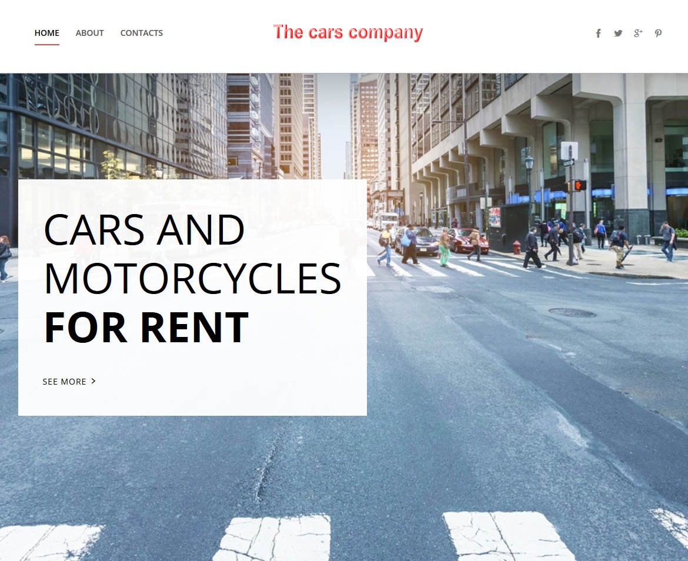
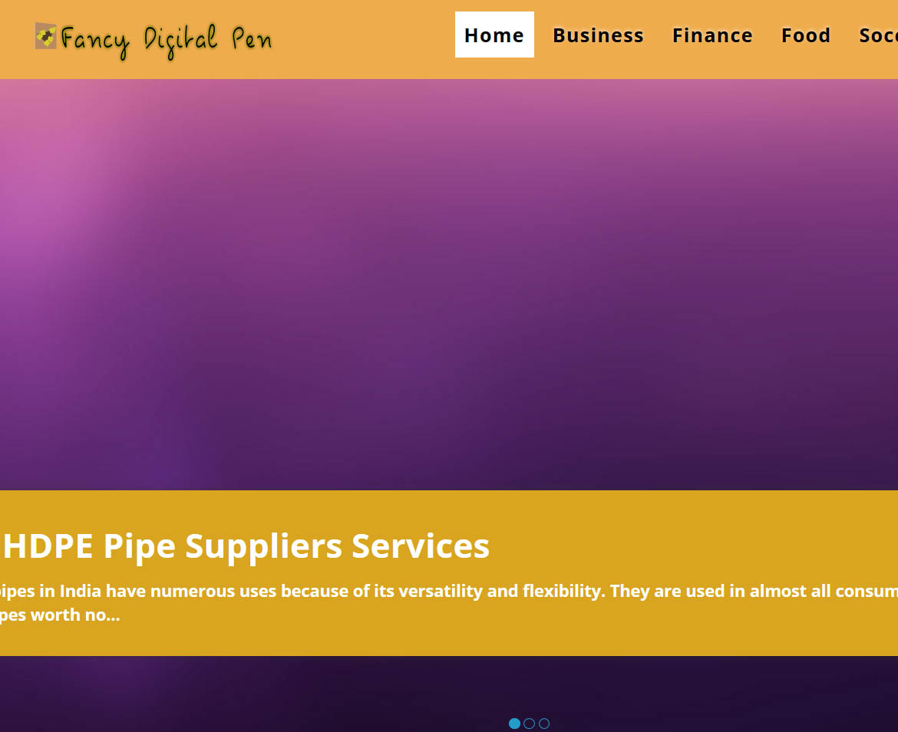
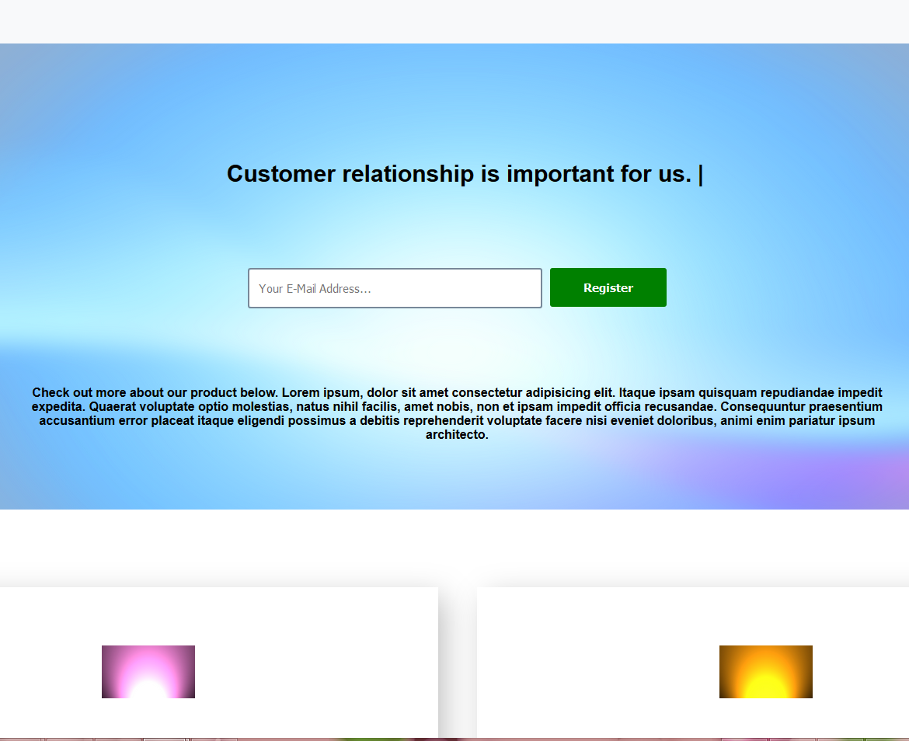
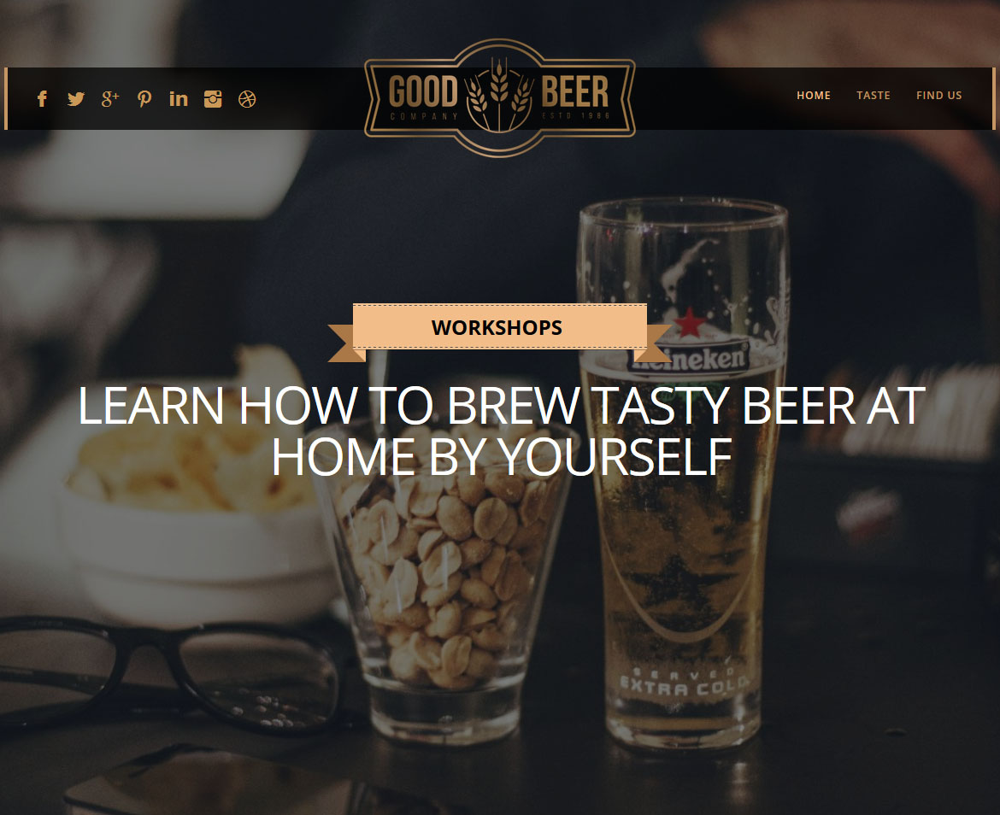
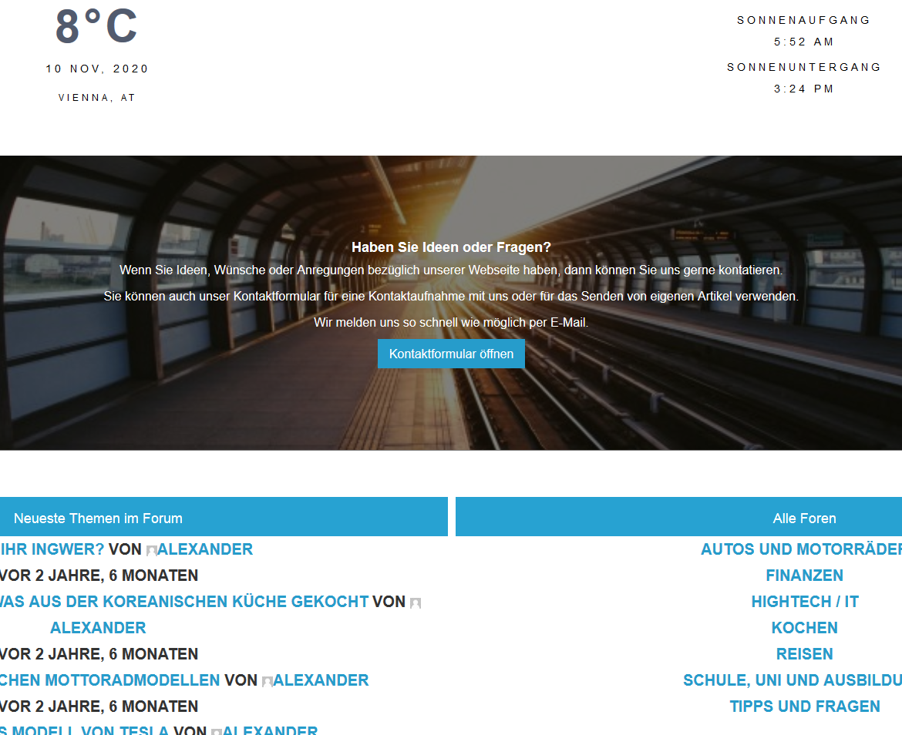
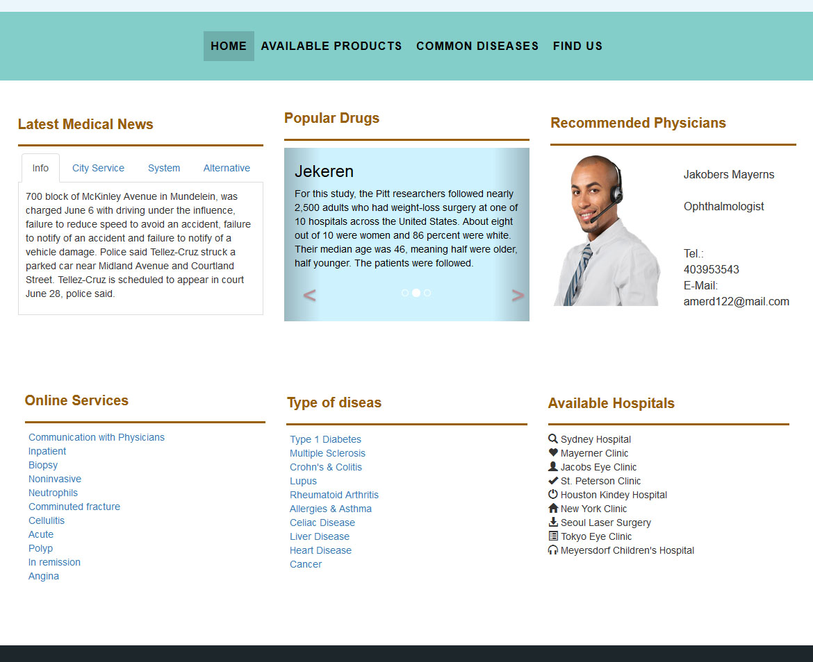

Static website that is clean and stylish. It is responsive and uses only HTML, CSS and
JavaScript.
The Cars Company

Web presence for a car company with information about the company products and services. A
medium on
how customers can get in touch with your company.
Displays links for social media accounts.
The Digital Pen

Hosted English website with articles about different topics. The website has modules too.
Website uses CMS, Bootstrap, and PHP.
Landing Page - Template

A clear and unique landing page that is user friendly. It is responsive and uses only HTML, CSS
and JavaScript.
Beer Organization

Website for an organisation. Contact and address information can be viewed directly.
Show available courses and other information.
The website displays a slider with different contents.
Alles Aktuelle

Hosted German web platform with a board, soccer league information, and more. You have to
register to use the board. Website uses CMS, Bootstrap, and PHP.
Medical Center

Website for information about physians and medications.
The front page has a dashboard with an overview about the most important information.
It displays modules and uses Bootstrap 4.